在促進青少年發展時發揮其最大潛力
青少年是國家最大的資源，而四健會是青少年最大組織，其根植的地方，由熱心義務指導員協助四健會員從事作業和紀錄 透過各項活動在全世界八十餘國的各個地區包括鄉村、都市，也包括了不同文化、經濟及社會背景的人
共同提倡生活實踐教育：「從工作中學習」並「精益求精」，此即四健會的精髓。
青少年是國家最大的資源，而四健會是青少年最大組織，其根植的地方，由熱心義務指導員協助四健會員從事作業和紀錄 透過各項活動在全世界八十餘國的各個地區包括鄉村、都市，也包括了不同文化、經濟及社會背景的人
共同提倡生活實踐教育：「從工作中學習」並「精益求精」，此即四健會的精髓。
MILESTONE
本年度已辦理活動數量
我國四健會創立會齡

累積會員數
NEWS

祝2020新年快樂!
開會事由：中華民國四健會協會第15屆第2次會員大會
本部為鼓勵高級中等學校之四健會社團或農業服務性質社團辦理單元式四健作業組、營隊或農村駐點等活動，以瞭解四健會、SDGs及農業產業等意涵，故提供旨揭補助
財團法人台灣永續能源研究基金會辦理 2024年傑出永續青年獎徵選活動
第八屆臺灣智慧農業週

為推動永續之農村青少年關懷工作，特訂定本要點，獎勵四健推廣教育工作表現傑出者。
旨揭活動課程表詳如附件一、甄選辦法詳如附件二，報名方式採線上及紙本報名：
本活動目的為培養青少年成為日後農水文化及水田種子教師及推廣工作種子人員，透過實地走訪、議題討論及專題講座等多元形式認識農田水利文化及水田，包含臺灣水圳發展、古圳維護與活化，及水田之生產、生活、生態，使學員瞭解水圳的功能及重要性，並

第30屆四健青年領袖營 調訓人員招募中 ！！

依據農業部「112年農業整合諮詢輔導體系計畫（112農再-1.2.1-1.1-輔-003(3)）」辦理。
依據農業部「112年農業整合諮詢輔導體系計畫」(112農再-1.2.1-1.1-輔-003(3))辦理。
ARCHIVES
參與各項集會活動是四健會教育中極重要的一環。會員們透過活動的參與，以了解人與人、人與自然、人與生活世界之間彼此連結互動的關係，並學習待人處事之道與體認民主法治的實踐精神。
會員凡年滿9歲至24歲的青少年，經徵得家長同意後，均可到學校或農、漁會申請成為四健會會員，並受申請單位審查通過後核發會員證，且依年齡不同分幼級、初級、中級、高級等四級。
 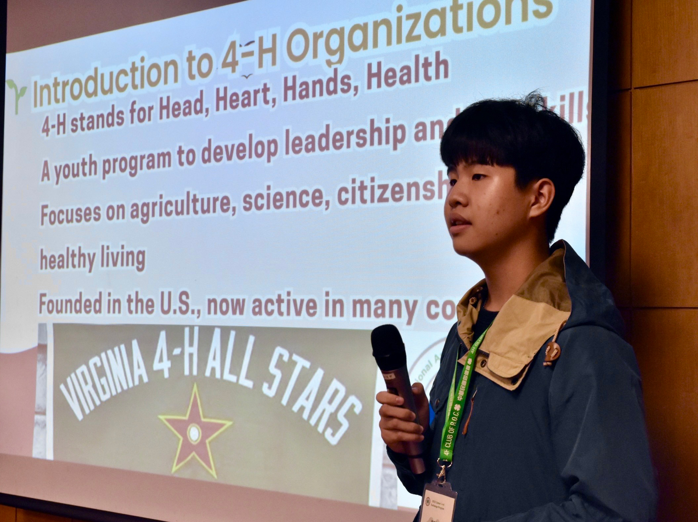
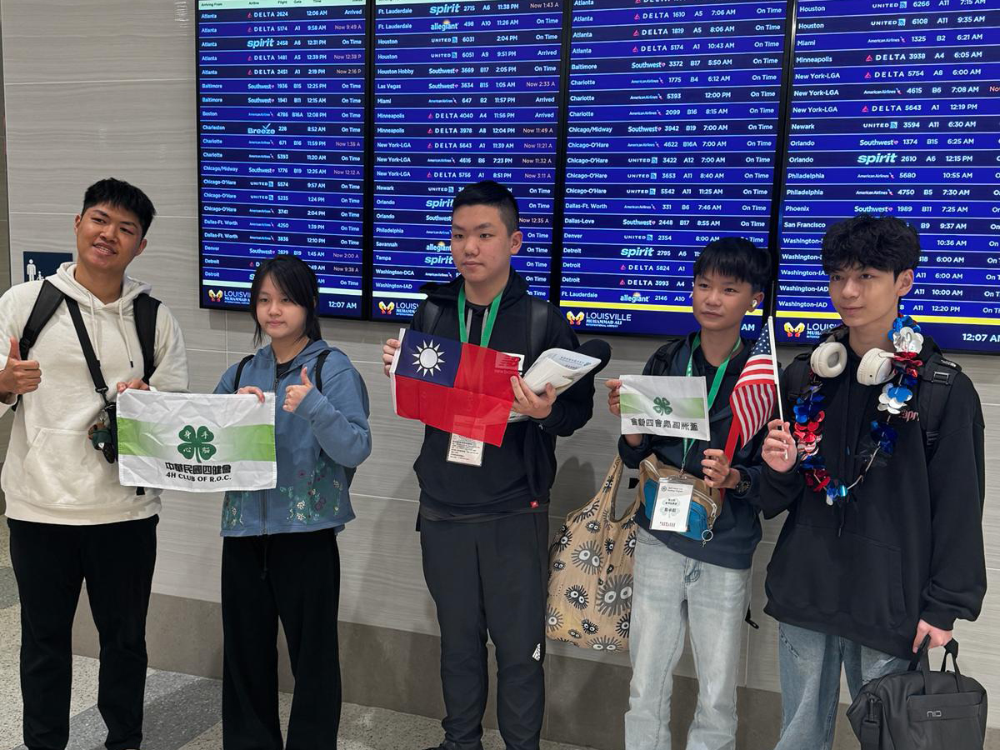
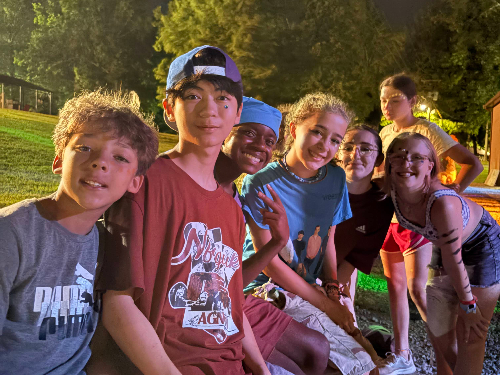
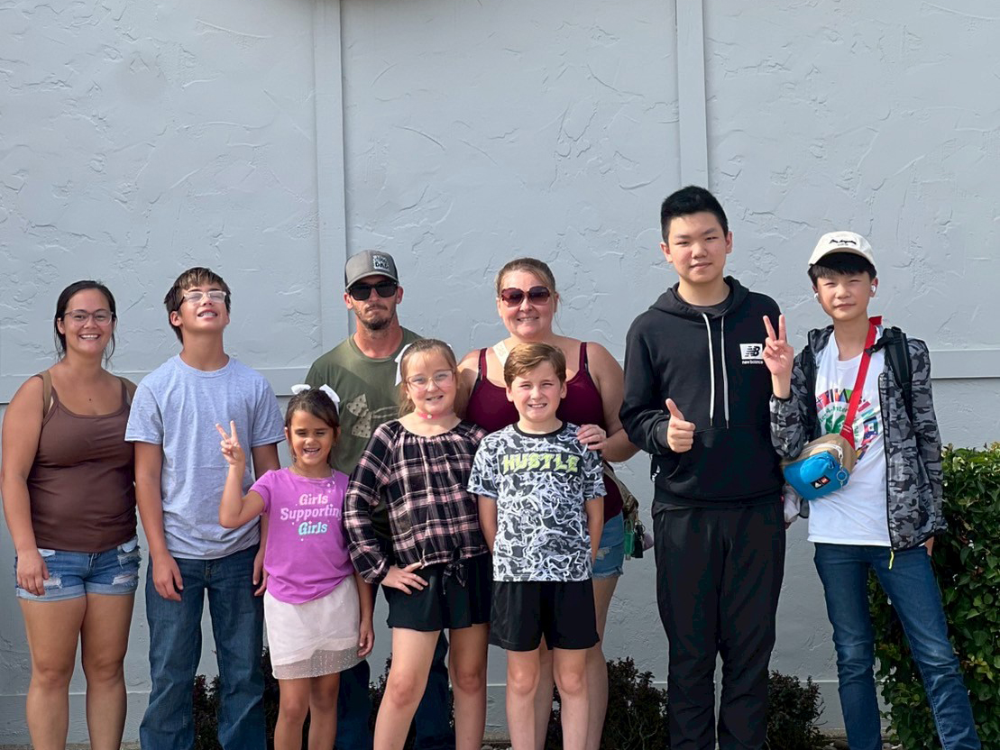
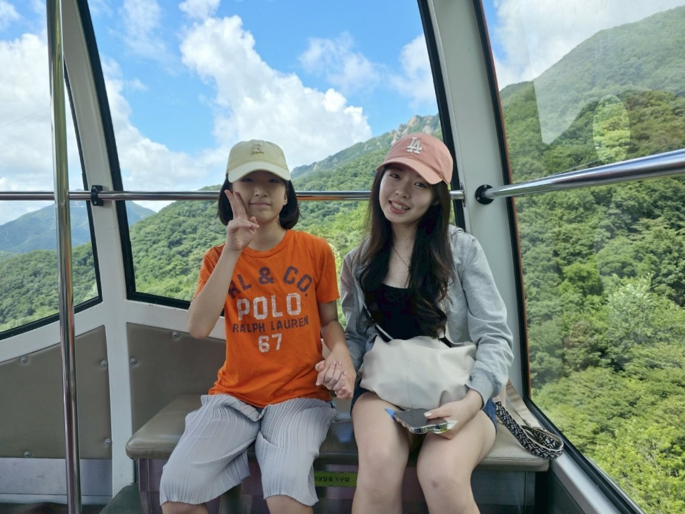
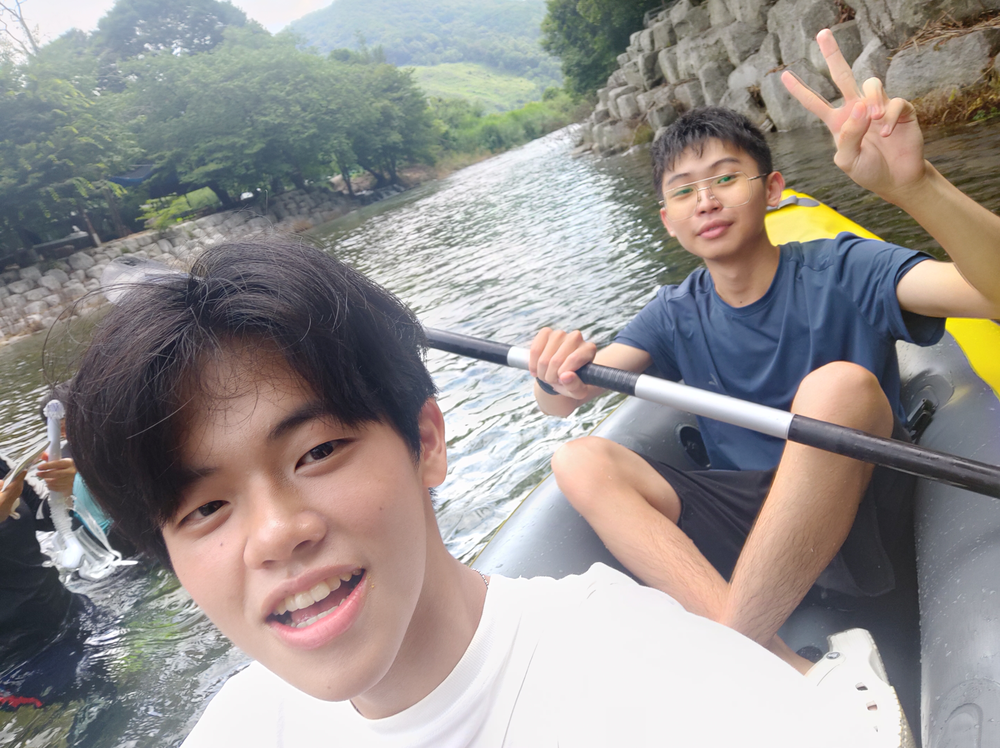
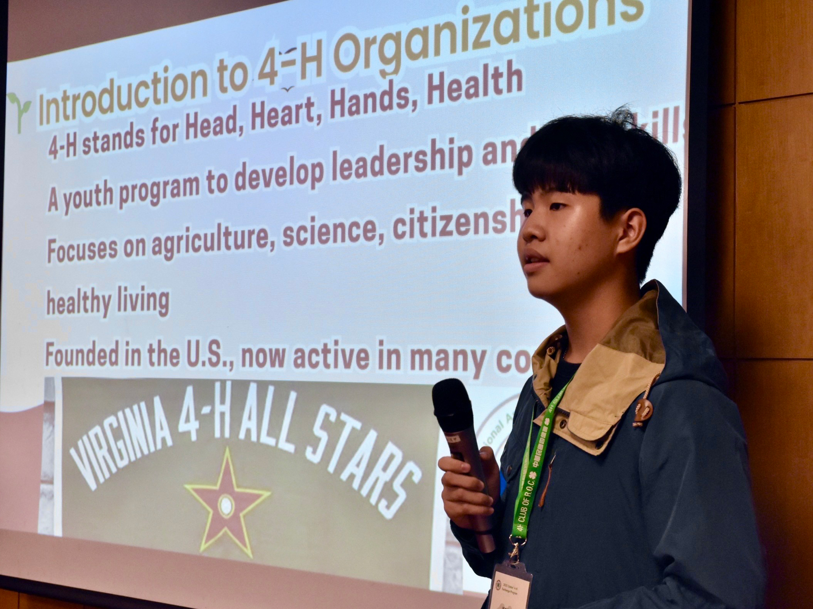
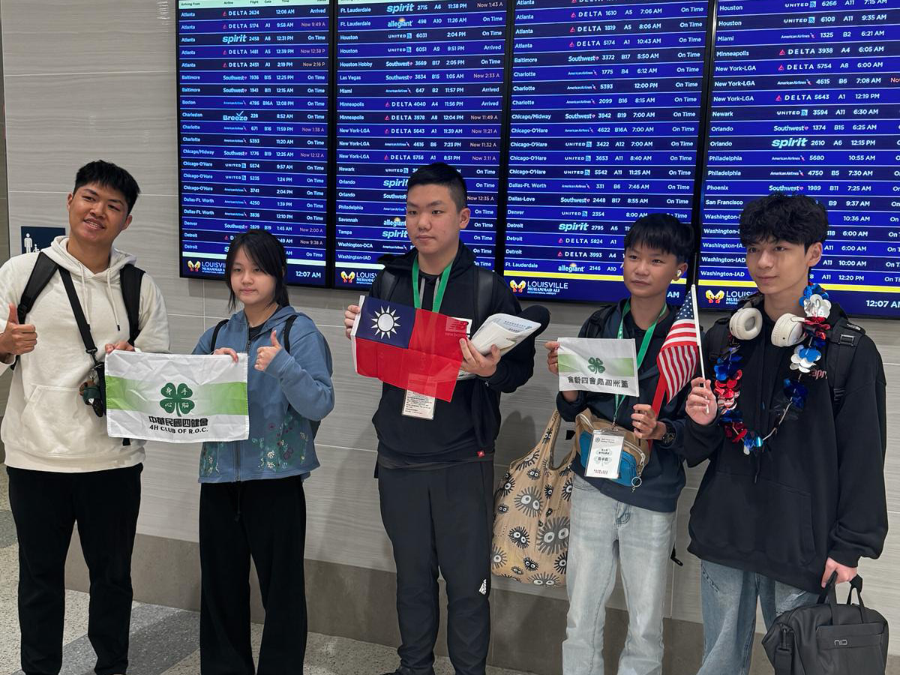
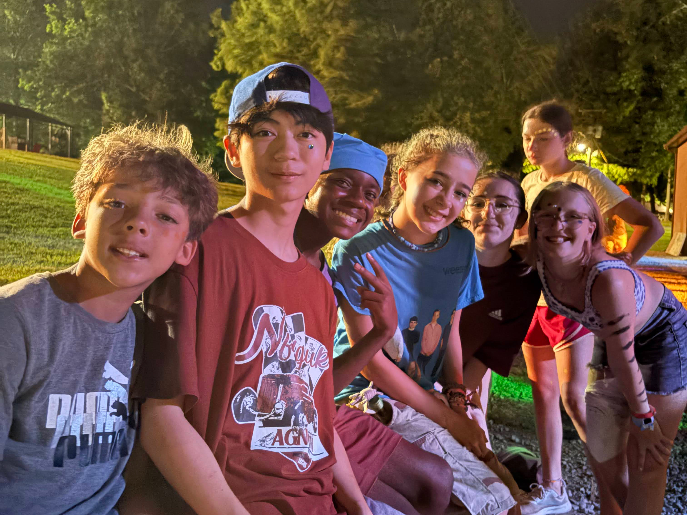
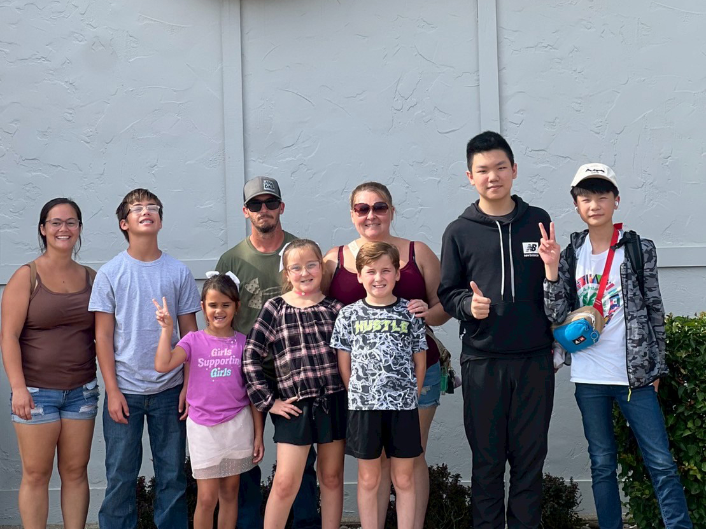
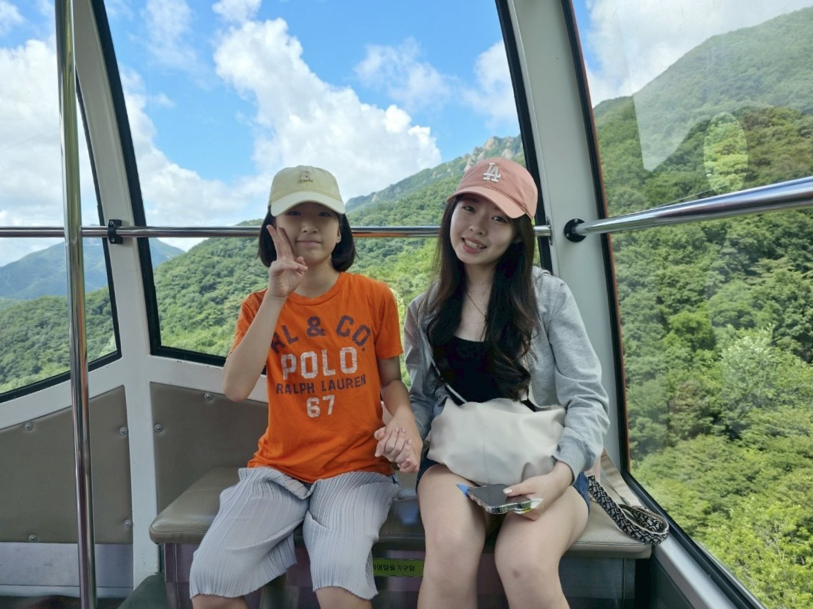
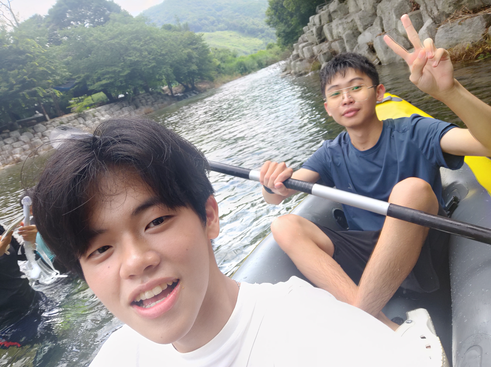

參與各項集會活動是四健會教育中極重要的一環。會員們透過活動的參與，以了解人與人、人與自然、人與生活世界之間彼此連結互動的關係，並學習待人處事之道與體認民主法治的實踐精神。
會員凡年滿9歲至24歲的青少年，經徵得家長同意後，均可到學校或農、漁會申請成為四健會會員，並受申請單位審查通過後核發會員證，且依年齡不同分幼級、初級、中級、高級等四級。

參與各項集會活動是四健會教育中極重要的一環。會員們透過活動的參與，以了解人與人、人與自然、人與生活世界之間彼此連結互動的關係，並學習待人處事之道與體認民主法治的實踐精神。
會員凡年滿9歲至24歲的青少年，經徵得家長同意後，均可到學校或農、漁會申請成為四健會會員，並受申請單位審查通過後核發會員證，且依年齡不同分幼級、初級、中級、高級等四級。

 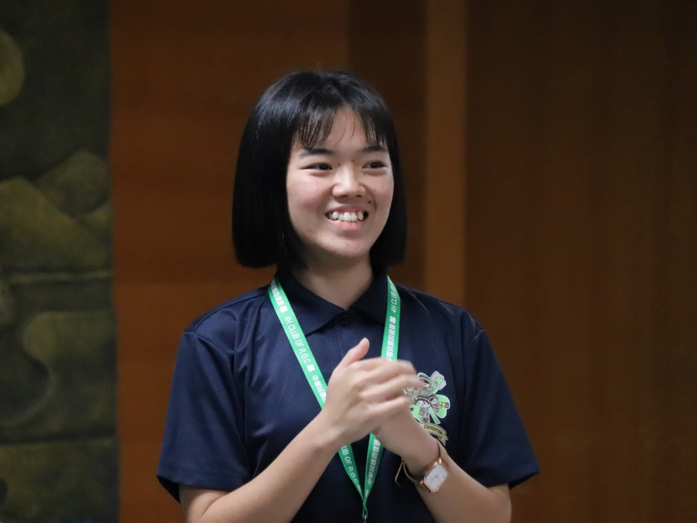
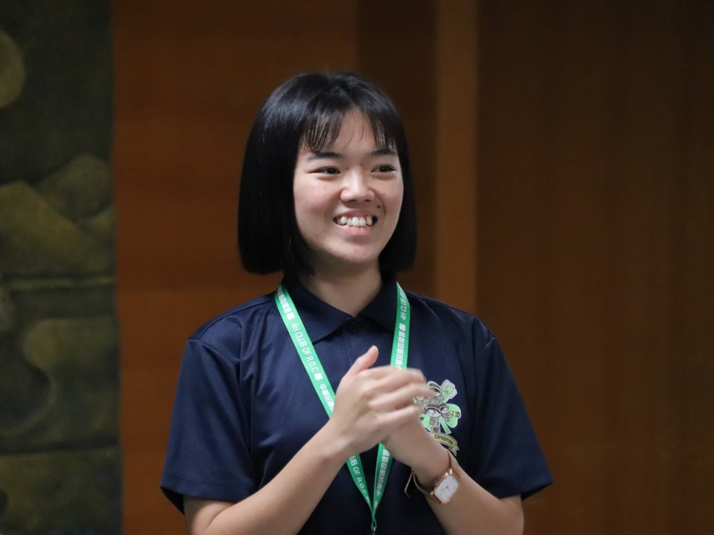
REFLECTIONS

文：江雨謙 桃園市八德區農會
「成功」，相信這兩個字是許多人一生的追求，然而，每個人對成功的定義卻不盡相同，有人渴望站上世界的頂峰，成為舉世聞名的大人物；有人希望透過自身的努力

文：陳昱岑 嘉義縣太保市農會
榮幸可以收到亭葦總召的邀請，擔任四健高中營的工作人員，也深刻地在亭葦身上學到帶領團隊的氛圍及分寸的拿捏。籌備